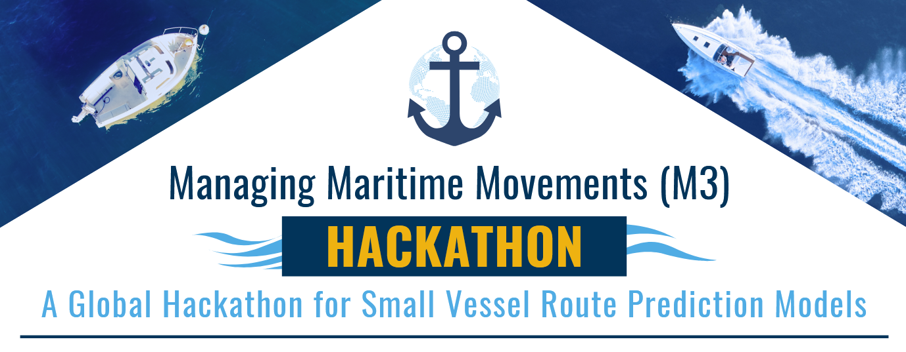
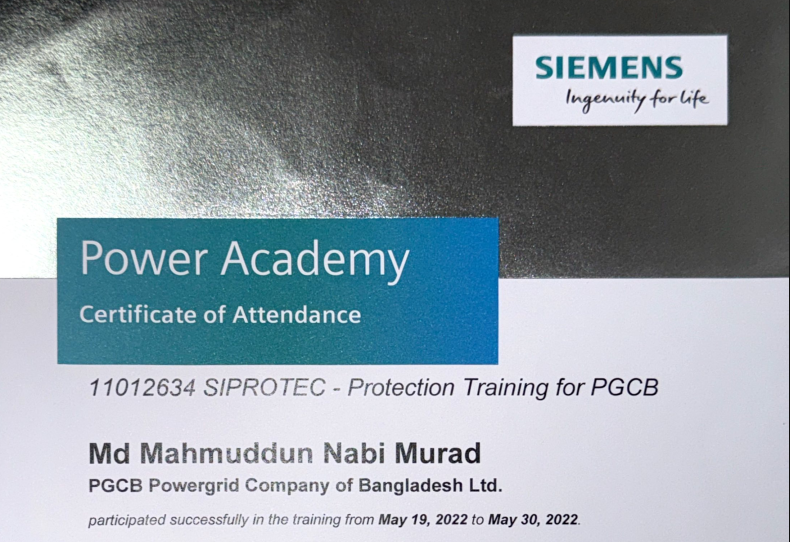

Machine Learning Researcher focused on advanced neural architectures such as Transformers, MLP-Mixers, and Graph Neural Networks. My work targets state-of-the-art performance for sequential learning, long-term forecasting, and robust anomaly detection under real operational constraints.
Professional Summary
Researching data-centric AI for real-world systems
Research and Publications
Flagship Projects
 AAAI 2025
AAAI 2025
 Research Project
Research Project
Vessel Route Prediction using Web-stream Video of a Maritime Environment
We develop a novel model that can predict vessel routes using both AIS and non-AIS data. Non-AIS data is obtained from web-stream video feeds of maritime environments.
Career Path
Experience
Aug 2023 - Present
Graduate Research Assistant
SISLab, University of South Florida
Developing efficient deep learning architectures for time-series analysis, environmental monitoring, and intelligent transportation systems.
Dec 2019 - Jul 2023
Protection Engineer
Power Grid Bangladesh PLC
Ensured grid stability through relay testing, control-system configuration, and fault analysis with practical Substation Automation Systems experience.
Recognition
Awards and Certificates


Certificate of ParticipationSIEMENS Protection Training
Participated in a comprehensive training program on power system protection in SIEMENS Power Academy at Germany. Gaining hands-on experience with Siemens protection relays and control systems, especially DIGSI, 7SA6, 7SA8, 7UT6, 7UT8, and 7SS85.
Scholarly Work
Selected Publications
WPMixer: Efficient Multi-Resolution Mixing for Long-Term Time Series Forecasting
Murad, M. N., et al. | AAAI 2025
Multi-Resolution Mixer Network for Sensor Localization
Murad, M. N., et al. | IEEE WCNC 2025
Camera-based Intruder Detection and Ship Monitoring
Murad, M. N., et al. | WACV 2025
Cluster-Aware Causal Mixer for Online Anomaly Detection
Murad, M. N., et al. | Under Review